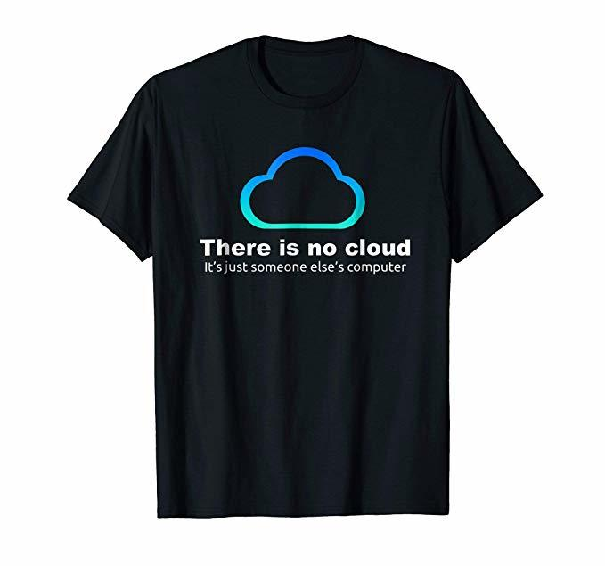

Journal Entry 10/14
Becca Abbe
- “Dreaming utopia is at once hopeful and analytical. Its design critiques the evils of an existing world, while simultaneously providing the blueprint for a new one.”
This is such a good point that I never really thought about. Along with another line about how we only imagine utopias when something has gone wrong is so intriguing. What if we started designing the “utopia” when it wasn't in response to a specific wrongness? What if we tried to make the good things better?
- “Driven by a heightened awareness of the precariousness of life on Earth, the people of these micro-communities sought a self-sufficient life outside of consumerism, political turmoil, war, and the oil crisis.”
This feels so similar to now with people creating very niche communities online to relate to people who feel the same way about the world as they do, trying to escape the terrible and anxiety-inducing current world.
- “what could have been a peer-maintained, communal space was inverted and twisted for profit.”
I feel like this is very common for things that start small and well-intentioned for them to become incredibly capitalistic when they gain any sort of traction.
- “And that someone else is likely Amazon, Google, Facebook or Apple, whose data centers use real resources and take up acres of space around the globe.”
I’m well aware of the space data centers take up. In NOVA all we know is data centers, it’s so normalized.
- “demystify the inner workings of the web”
This is exactly what I feel like this class provides for us. Constantly demystifying and making the web feel easier to navigate and more accessible.

Thoughts and comments during discussion: